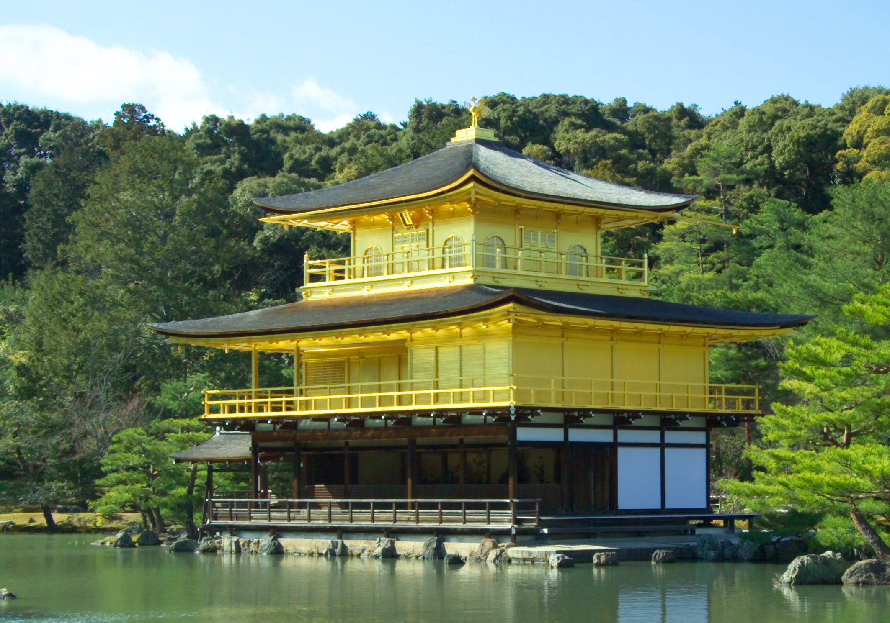
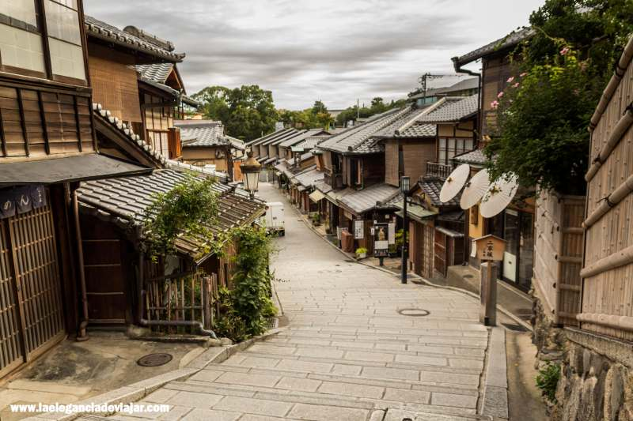

Descubriendo Kyoto
Publicado el 21 de enero de 2026
Kyoto es una ciudad llena de templos antiguos, jardines zen y calles tradicionales que te transportan al pasado.
Durante mi viaje, visité el famoso templo Kinkaku-ji conocido como "el Pabellón Dorado".

También paseé por el barrio de Gion, donde se pueden ver geishas caminando por las calles tradicionales.

La gastronomía local, como el sushi y el ramen artesanal, es deliciosa y muy recomendable probarla en pequeños restaurantes familiares.